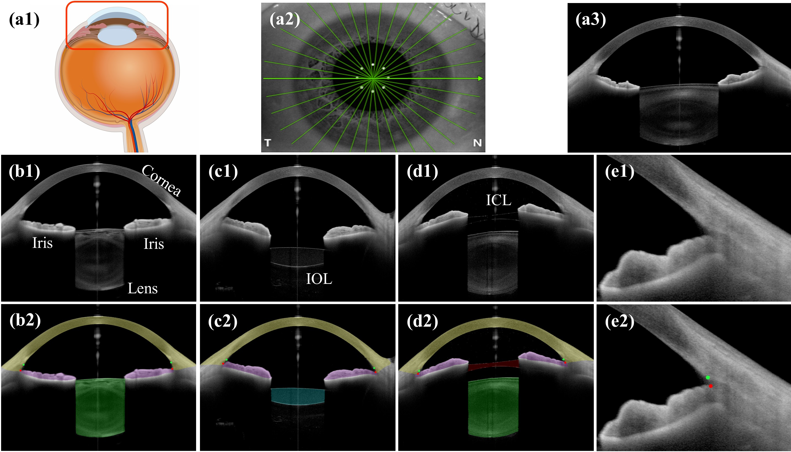
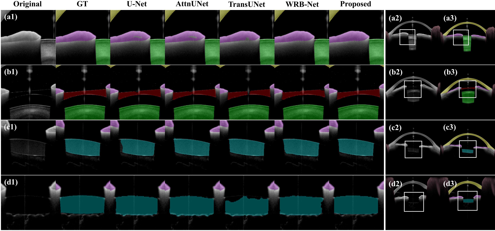
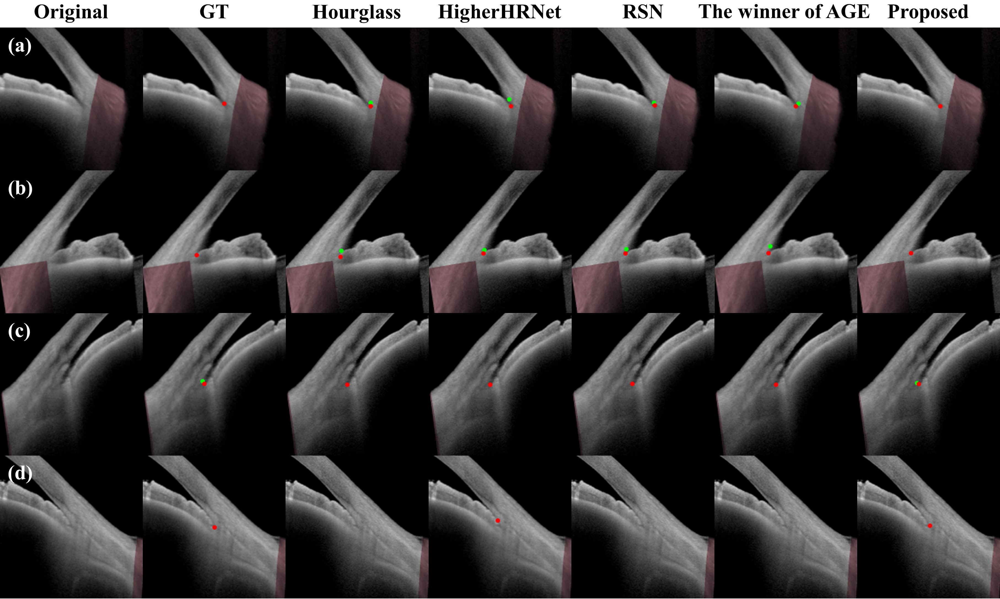
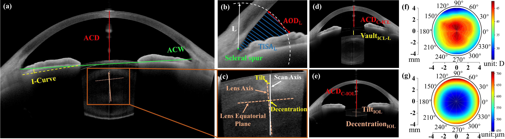

Introduction

Figure 1. AS-OCT imaging process and the main structures of the anterior segment: (a1) Illustration of the anterior segment in the eye. (a2) AS-OCT radial scanning pattern in Heidelberg ANTERION OCT system. (a3) An example of a cross-sectional AS-OCT image corresponding to one scan line in (a2). (b1-d1) Main anterior segment structures and (b2-d2) their corresponding segmentation masks: iris (purple), lens (green), cornea (yellow), IOL (blue) and ICL (red). (e1-e2) ACA and the two landmarks SS (green dot) and IR (red dot).
Anterior segment diseases are among the leading causes of irreversible blindness. However, a method capable of recognizing all important anterior segment structures for clinical diagnosis is lacking. By sharing the knowledge learned from each task, we proposed a fully automated multitask deep learning method that allows for simultaneous segmentation and quantification of all major anterior segment structures, including the iris, lens, cornea, as well as implantable collamer lens (ICL) and intraocular lens (IOL), and meanwhile for landmark detection of scleral spur and iris root in anterior segment OCT (AS-OCT) images. In addition, we proposed a refraction correction method to correct for the true geometry of the anterior segment distorted by light refraction during OCT imaging. 1251 AS-OCT images from 180 patients were collected and were used to train and test the model. Experiments demonstrated that our proposed network was superior to state-of-the-art segmentation and landmark detection methods, and close agreement was achieved between manually and automatically computed clinical parameters associated with anterior chamber, pupil, iris, ICL, and IOL. Finally, as an example, we demonstrated how our proposed method can be applied to facilitate the clinical evaluation of cataract surgery.
Results

Figure 2. Visual comparisons of different methods for anterior segment segmentation.

Figure 3. Visual comparisons of different methods for landmark detection of SS (green
dot) and IR (red dot).

Figure 4. Validation of refraction correction. (a1) The bi-convex lens used for comparison. (a2) The refraction corrected image from Heidelberg ANTERION. (a3) The refraction
corrected image using our proposed method. (b1, c1) Two uncorrected AS-OCT images. (b2, c2) Corrected AS-OCT images by our proposed method corresponding to (b1) and (c1).

Figure 5. Illustration of quantification of the main clinical parameters derived in this study.